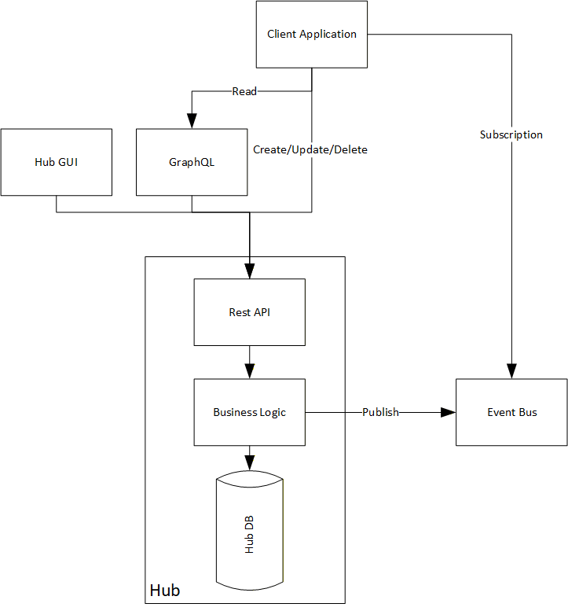

Detailed Design & Implementation
Data Design and Migration Strategy
Source of Truth and Ownership
During transition, Hub remains the authoritative source for core transactional domain data. Downstream systems maintain consumer-specific projections built from event notifications and query-driven retrieval.
Strategy
The reason for this design is to limit the scope of changes that need to be made to hub, while still enabling downstream systems to have the data they need in a format that works for them. By using an event-driven approach, we can decouple the systems and allow for more flexibility in how downstream systems consume and use the data. This also allows us to preserve existing domain rule enforcement in hub, while still enabling downstream systems to evolve independently. Additionally, this approach can improve security posture by limiting the exposure of integration-facing interfaces and enabling incremental rollout with reversible steps.
Capability, Entity, and Integration Decomposition
The detailed design decomposes the Hub domain across three complementary views: capabilities, entities, and integration patterns. This provides a structured basis for implementation decisions by separating functional responsibility, data ownership, and cross-system interaction design.
Capabilities describe what the platform does. In the Hub context, these include concerns such as identity and access, domain transaction processing, notification, reporting, audit, and consumer synchronization. Defining these capabilities makes it possible to assign clear ownership boundaries and determine which responsibilities remain within Hub versus which can be externalized over time.
Entities describe the business objects managed by those capabilities. Examples include customer, account, policy, claim, billing profile, user credential, and event checkpoint. For each entity, the design should identify the authoritative source, lifecycle events, validation boundaries, and downstream consumers. This is essential for deciding which data can be projected externally and which data must continue to be governed within Hub.
Integration patterns describe how capabilities and entities interact across system boundaries. In this target approach, interaction patterns are intentionally separated by purpose: event notifications signal that a change occurred, GraphQL queries retrieve consumer-specific read projections, and REST commands provide controlled write-back for approved use cases. Mapping these patterns clarifies where coupling exists today and how it is reduced in the target state through stable contracts, explicit ownership, and replayable synchronization flows.
Taken together, this decomposition ensures the implementation is not treated as a generic interface modernization exercise. Instead, it establishes a traceable model from business capability, to entity ownership, to interaction mechanism, which supports phased delivery, clearer governance, and lower-risk decoupling.
Data Movement Patterns
- Event notification communicates that a change occurred.
- GraphQL retrieval provides consumer-specific field selection for synchronization.
- REST commands provide controlled write-back into Hub for approved use cases.
Reference flow per domain transaction:
- Domain write is committed in Hub.
- Event is published with identifiers and correlation metadata.
- Consumer receives event and requests a targeted GraphQL projection.
- Consumer stores its projection and records event processing checkpoint.
- Reconciliation jobs periodically compare authoritative and projection state.

Data Integrity Controls
- Idempotent event consumption using event identifiers and deduplication checkpoints.
- Correlation IDs propagated across event, query, and command flows.
- Replay/reconciliation capability for failed or delayed synchronization.
- Validation-on-write in Hub to ensure domain invariants remain enforced.
Migration Approach
- Baseline load: seed consumer stores from current state snapshots.
- Incremental sync: apply event-driven updates post-baseline.
- Reconciliation windows: scheduled consistency checks and automated drift reporting.
- Cutover readiness: objective criteria for each domain before switching system ownership.
Suggested cutover readiness checklist per domain:
| Criterion | Target |
|---|---|
| Baseline load completion | 100% of in-scope entities loaded |
| Event processing reliability | >= 99.9% successful handling over agreed observation window |
| Data drift | 0 critical drift defects and agreed non-critical threshold |
| Operational readiness | Runbooks, alerts, and on-call ownership signed off |
| Rollback readiness | Rollback drill completed successfully |
API and Interface Specifications
Event Contracts
Event envelope should include:
- Event ID, event type, version, and timestamp.
- Aggregate/entity identifier.
- Tenant/context metadata.
- Correlation and causation identifiers.
Event payload should remain compact and stable, providing enough information for consumers to fetch enriched data as required.
Example event envelope:
{
"eventId": "7f3e5f6b-95b8-4f90-9d30-0f54af0b2a17",
"eventType": "Hub.CustomerUpdated.v1",
"occurredAtUtc": "2026-04-22T09:15:00Z",
"tenantId": "tenant-a",
"aggregateType": "Customer",
"aggregateId": "C12345",
"correlationId": "c4f0b3aa-0bde-4e6b-9f0e-8936a4f63f89",
"causationId": "9b6f5c5a-5f3a-4511-b2c9-c3c7d1c47ab8",
"payload": {
"changedFields": ["email", "status"],
"version": 18
}
}GraphQL Query Surface
Design goals:
- Consumer-selected fields to avoid over-fetching.
- Query authorization by role and tenant scope.
- Schema evolution with backward-compatible deprecations.
- Pagination and filtering for high-volume domains.
Example consumer query:
query CustomerSyncProjection($id: ID!) {
customer(id: $id) {
id
status
email
updatedAtUtc
billingProfile {
tier
isActive
}
}
}REST Command Surface
Design goals:
- Explicit resource and command semantics for create/update/delete operations.
- Standardized error contract and validation response model.
- Idempotency support where retry behavior is expected.
- Contract versioning strategy with deprecation windows.
Example command request:
PATCH /api/customers/C12345
Authorization: Bearer <token>
Idempotency-Key: 536f0ef5-b95e-4a2f-8d8b-f4f10d7aa2d6
Content-Type: application/json
{
"status": "Active",
"email": "new.email@example.com"
}Standard error payload shape:
{
"code": "ValidationFailed",
"message": "Request contains invalid fields.",
"correlationId": "c4f0b3aa-0bde-4e6b-9f0e-8936a4f63f89",
"errors": [
{
"field": "email",
"reason": "InvalidFormat"
}
]
}Security and Compliance Controls
Identity and Access
- Modern authentication for all integration clients.
- Role- and scope-based authorization for query and command endpoints.
- Principle of least privilege for service identities.
Data Protection
- Encryption in transit for all APIs and event transport channels.
- Encryption at rest for persisted operational and projection data.
- Controlled handling of sensitive data in logs and telemetry.
Audit and Traceability
- Immutable audit trail for command operations.
- Event lineage traceability from producer through consumers.
- End-to-end request tracing with correlation IDs.
Compliance Readiness
- Retention and deletion controls aligned with policy requirements.
- Data minimization in event payloads and API responses.
- Security review gates before production rollout milestones.
Implementation Sequence
- Establish cross-cutting foundations (identity, telemetry, correlation, contract governance).
- Introduce event publication for selected low-risk domains.
- Deliver GraphQL read models for consumer pull integration.
- Expose modernized REST command endpoints for controlled write-back.
- Expand domain coverage iteratively with domain-specific cutover criteria.
- Decommission legacy integration pathways as replacement coverage reaches target thresholds.
Delivery governance at each step should include:
- Architecture sign-off for contract and compatibility implications.
- Security sign-off for identity, authorization, and data handling controls.
- Operations sign-off for monitoring, alerting, and rollback coverage.
Acceptance Criteria
The implementation is considered complete when all of the following are true:
- Critical domain events are published with required metadata and schema validation.
- Consumer sync projections are demonstrably current within agreed freshness SLO.
- Command API contracts pass functional, security, and backward-compatibility tests.
- Reconciliation jobs report no unresolved critical drift defects.
- Production runbooks, dashboards, and alert routes are validated in drills.
Non-Functional Expectations
- Reliability: graceful degradation and retry-safe integration patterns.
- Performance: bounded latency for event-to-consumer synchronization.
- Scalability: horizontal scale for query and event consumer workloads.
- Supportability: operational dashboards and alerts aligned to SLOs.